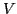
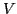

A matrix  can be reduced to upper triangular banded form
by BLAS-3 block Housholder transformations. Deferring matrix updates, the
algorithm accesses
can be reduced to upper triangular banded form
by BLAS-3 block Housholder transformations. Deferring matrix updates, the
algorithm accesses  only to extract blocks and to perform
multiplications , , where if
only to extract blocks and to perform
multiplications , , where if  and
and  have
have  columns than
the bandwidth of upper triangular is . When
columns than
the bandwidth of upper triangular is . When  is sparse,
block Householder eliminations provide a BLAS-3 method to contruct a
approximation, with and  orthogonal, (
),
(
),
, with the size of
is sparse,
block Householder eliminations provide a BLAS-3 method to contruct a
approximation, with and  orthogonal, (
),
(
),
, with the size of  constrained by available RAM.
constrained by available RAM.
The decomposition is stable, is efficient in terms of cache utilization, and should scale well in distributed parallel computation.
The approximate (truncated) decomposition can be used to provide some matrix singular values, to solve linear systems and least squares problems, and to provide an approximate inverse preconditioner. Multi-grid applications may be parallel iterations with the full matrix, as a preconditioner, or in solution of a coarsened problem. Each of these applications is discussed.
A primary advantage of the block reduction to a banded upper triangular form is that the underlying sparse matrix is accessed only for multiplications by blocks of matrices (sparse matrix dense matrix multiplications). Serial SPMD multiplications run at a significant fraction of peak speed on cache based processors, and should also run well in parallel. Stability of block Householder transformations aids in scalability.
Numerically, the truncated decomposition is seen to be particularly efficient in approximating low rank matrices or low rank matrices added to a matrix with a known factorization.
Some unresolved questions are how to best prepermute  , how to best pad
, how to best pad
 (thick start), and considered as a Krylov method the best restart
strategies (thick restart?, repermutation of
(thick start), and considered as a Krylov method the best restart
strategies (thick restart?, repermutation of  ?).
?).
The remainder of the abstract discusses why multiplication of is
likely to be faster than computing , assuming  sparse,
sparse,  a dense
vector
a dense
vector  a dense matrix with relatively few columns. Assume
a dense matrix with relatively few columns. Assume  is too
large to fit in cache memory.
is too
large to fit in cache memory.  is typically stored so that it can be
pulled in a stream from RAM.
If
is typically stored so that it can be
pulled in a stream from RAM.
If  fits in cache, then as each element of
fits in cache, then as each element of  appears in the CPU it
can be matched by the appropriate element of
appears in the CPU it
can be matched by the appropriate element of  . If indexing operations
do not take too long the main cost is then the fetch of
. If indexing operations
do not take too long the main cost is then the fetch of  from RAM.
Since the fetch of
from RAM.
Since the fetch of  is streamed, elements of
is streamed, elements of  arrive more or less
at the peak speed of the data bus.
arrive more or less
at the peak speed of the data bus.
On Intel Xeons, sparse can attain up to about ten per cent of the
advertised peak flop rate. When  becomes too large to fit in cache,
and if
becomes too large to fit in cache,
and if  is accessed randomly, then the
computation is dominated by cache misses and slows dramatically. In some
experiments with Intel Xeons, compted at less than one per cent of
peak processor speed. When multiplying by
is accessed randomly, then the
computation is dominated by cache misses and slows dramatically. In some
experiments with Intel Xeons, compted at less than one per cent of
peak processor speed. When multiplying by  with
with  columns as opposed
to
columns as opposed
to  , each access of an element of
, each access of an element of  allows
allows  multiplications.
Storage of
multiplications.
Storage of  should be arranged so that when a given element of
should be arranged so that when a given element of  is
accessed, the next required elements of
is
accessed, the next required elements of  are accessed. In Fortran,
are accessed. In Fortran,  for is stored as so that each row of
for is stored as so that each row of  is sequentially
stored as a column of .
is sequentially
stored as a column of .
In experiments summarized here, we also blocked  (column blocks) to
further minimize cache misses. The blocked SPMD can execute at a
flop rate several orders of magnitude faster than non-blocked . The
marked speedup of BLAS 3 over BLAS 2 motivates the algorithm development
described in the presentation.
(column blocks) to
further minimize cache misses. The blocked SPMD can execute at a
flop rate several orders of magnitude faster than non-blocked . The
marked speedup of BLAS 3 over BLAS 2 motivates the algorithm development
described in the presentation.